Lecture 10
Spark ML and Spark NLP
Looking Back
- Spark RDDs, DataFrames, SparkSQL
- Spark Diagnostic UI
- PySpark UDFs and Pandas UDFs
- Performance optimization
Today
- Spark MLlib: ML at scale
- Transformers, Estimators, Pipelines
- Feature engineering with Spark
- ML models in Spark
- Text analytics and Spark NLP
ML at Scale with Spark
The advanced analytics/ML process
Gather and collect data
Clean and inspect data
Perform feature engineering
Split data into train/test
Evaluate and compare models
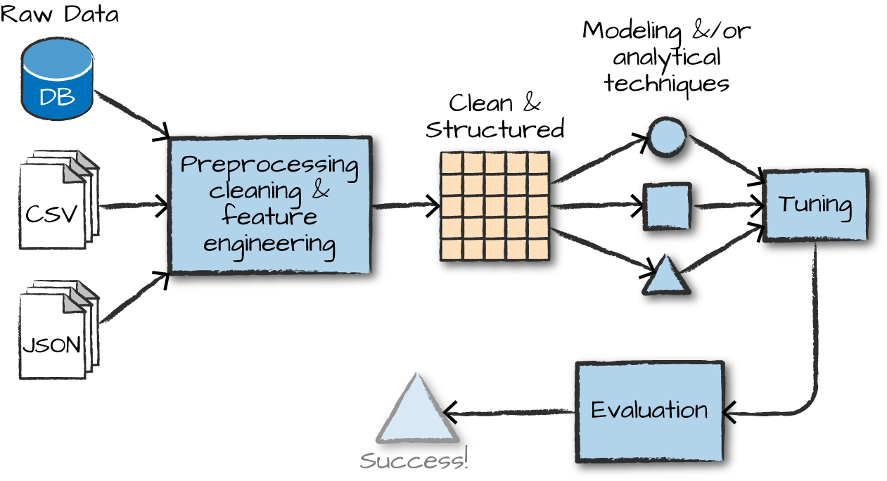
Overview of ML algorithms

Pipelines for ML workflows
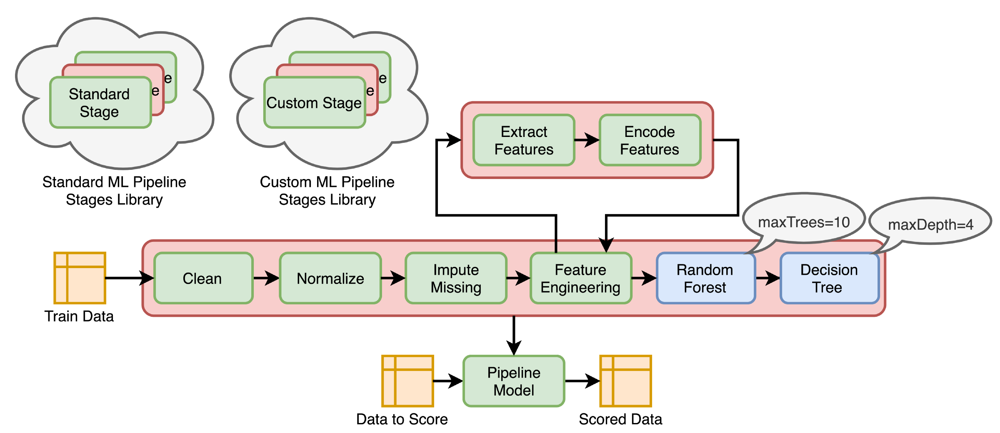
What is MLlib?
MLlib capabilities
Capabilities
- Gather and clean data
- Perform feature engineering
- Perform feature selection
- Train and tune models
- Put models in production
API is divided into two packages
org.apache.spark.ml (High level API) - Built on top of DataFrames - Allows construction of ML pipelines
org.apache.spark.mllib (Predates DataFrames) - Original API built on top of RDDs
Inspired by scikit-learn
DataFrameTransformerEstimatorPipelineParameter
Transformers, Estimators, and Pipelines
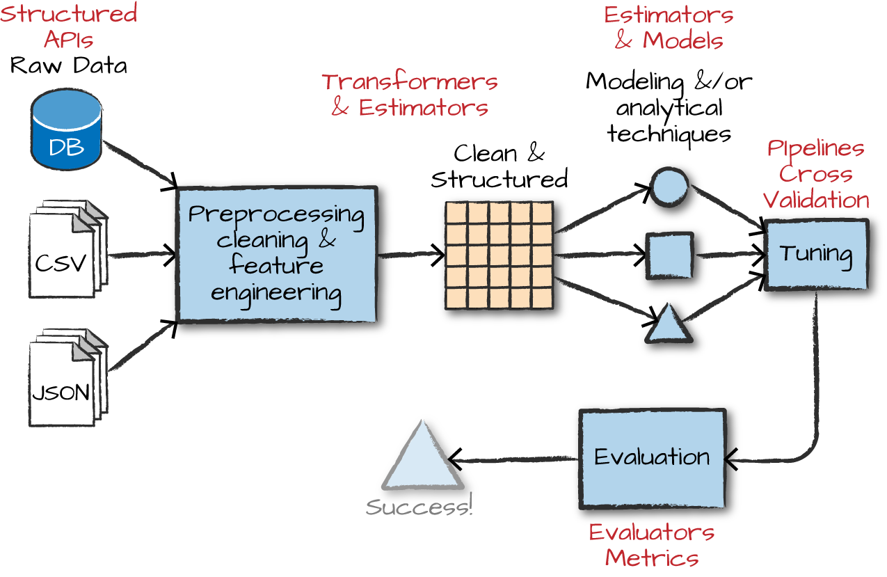
Transformers
Transformers take DataFrames as input, and return a new DataFrame as output.
Transformers do not learn any parameters from the data — they simply apply rule-based transformations to either prepare data for model training or generate predictions using a trained model.
Transformers are run using the .transform() method
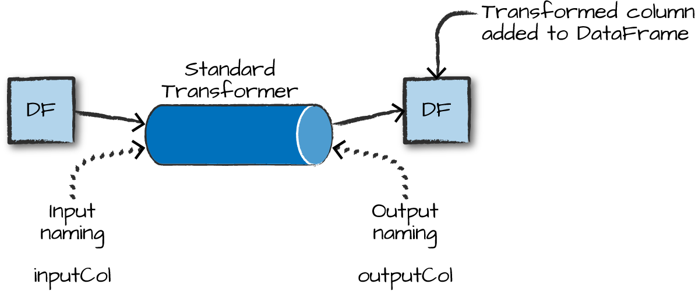
Some Examples of Transformers
- Converting categorical variables to numeric (required for MLlib)
StringIndexerOneHotEncoder— can act on multiple columns at once
- Data Normalization
NormalizerStandardScaler
- String Operations (for NLP pipelines)
TokenizerStopWordsRemoverWord2Vec
- Dimensionality reduction
PCA
- Converting continuous to discrete
BucketizerQuantileDiscretizer
MLlib needs a single, numeric features column as input
Each row in this column contains a vector of data points corresponding to the set of features used for prediction.
Use the
VectorAssemblertransformer to create a single vector column from a list of columns.All categorical data must be numeric for machine learning.
from pyspark.ml.linalg import Vectors
from pyspark.ml.feature import VectorAssembler
dataset = spark.createDataFrame(
[(0, 18, 1.0, Vectors.dense([0.0, 10.0, 0.5]), 1.0)],
["id", "hour", "mobile", "userFeatures", "clicked"])
assembler = VectorAssembler(
inputCols=["hour", "mobile", "userFeatures"],
outputCol="features")
output = assembler.transform(dataset)
output.select("features", "clicked").show(truncate=False)Estimators
Estimators learn (or “fit”) parameters from your DataFrame via the .fit() method, and return a model which is a Transformer.
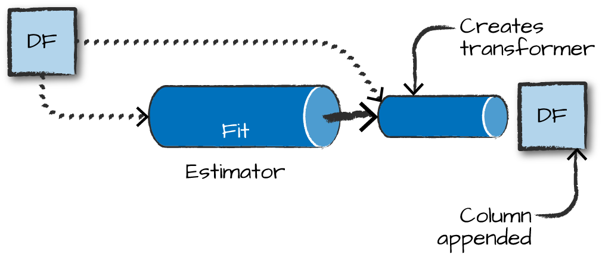
Pipelines
Pipelines
Pipelines combine multiple steps into a single workflow:
- Data cleaning and feature processing via transformers, using
stages - Model definition
- Run the pipeline to do all transformations and fit the model
The Pipeline constructor takes an array of pipeline stages.
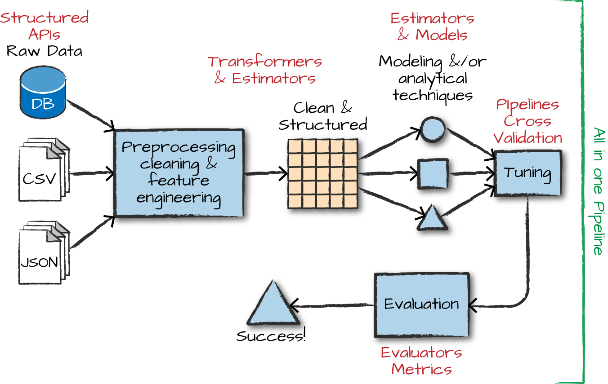
Why Pipelines?
Cleaner Code: No need to manually keep track of training and validation data at each step.
Fewer Bugs: Fewer opportunities to misapply a step or forget a preprocessing step.
Easier to Productionize: Pipelines help transition a model from prototype to deployed.
More Options for Model Validation: Cross-validation and other techniques apply easily to Pipelines.
Feature Engineering Walk-through
Example dataset: HMP Activity Recognition
Using the HMP Dataset — sensor data for human motion prediction.
Step 1: StringIndexer — strings to numbers
The StringIndexer is an estimator with both fit and transform methods.
from pyspark.ml.feature import StringIndexer
indexer = StringIndexer(inputCol='class', outputCol='classIndex')
indexed = indexer.fit(df).transform(df)
indexed.show(5)
# +---+---+---+-----------+--------------------+----------+
# | x| y| z| class| source|classIndex|
# +---+---+---+-----------+--------------------+----------+
# | 29| 39| 51|Drink_glass|Accelerometer-201...| 2.0|
# ...Step 2: OneHotEncoder — encode categories
Unlike StringIndexer, OneHotEncoder is a pure transformer with only a transform method.
from pyspark.ml.feature import OneHotEncoder
encoder = OneHotEncoder(inputCol='classIndex', outputCol='categoryVec')
encoded = encoder.transform(indexed)
encoded.show(5, False)
# +---+---+---+-----------+...+----------+--------------+
# |x |y |z |class |...|classIndex|categoryVec |
# +---+---+---+-----------+...+----------+--------------+
# |29 |39 |51 |Drink_glass|...| 2.0|(13,[2],[1.0])|Step 3: VectorAssembler — create features vector
Step 4: Normalizer — scale features
Step 5: Build the Pipeline
The Pipeline constructor takes an array of stages in the right sequence:
You now have a DataFrame optimized for SparkML!
Machine Learning Models in Spark
Available model types
Regression
- Linear regression
- Generalized linear model (GLM)
- Random forest regression
- Gradient-boosted trees
Classification
- Logistic regression
- Gradient-boosted tree classifier
- Naive Bayes
- Multilayer perceptron (neural network)
Other
- Clustering: K-means, LDA, GMM
- Association rule mining
- Dimensionality reduction: PCA, SVD
Building your model — RFormula
Feature selection using easy R-like formulas:
from pyspark.ml.feature import RFormula
dataset = spark.createDataFrame(
[(7, "US", 18, 1.0),
(8, "CA", 12, 0.0),
(9, "NZ", 15, 0.0)],
["id", "country", "hour", "clicked"])
formula = RFormula(
formula="clicked ~ country + hour",
featuresCol="features",
labelCol="label")
output = formula.fit(dataset).transform(dataset)
output.select("features", "label").show()Feature selection — ChiSqSelector
Pick categorical variables most dependent on the response variable:
from pyspark.ml.feature import ChiSqSelector
from pyspark.ml.linalg import Vectors
df = spark.createDataFrame([
(7, Vectors.dense([0.0, 0.0, 18.0, 1.0]), 1.0),
(8, Vectors.dense([0.0, 1.0, 12.0, 0.0]), 0.0),
(9, Vectors.dense([1.0, 0.0, 15.0, 0.1]), 0.0)],
["id", "features", "clicked"])
selector = ChiSqSelector(numTopFeatures=1, featuresCol="features",
outputCol="selectedFeatures", labelCol="clicked")
result = selector.fit(df).transform(df)
result.show()Tuning your model — Part 1
Hyperparameter search with ParamGridBuilder:
from pyspark.ml.evaluation import RegressionEvaluator
from pyspark.ml.regression import LinearRegression
from pyspark.ml.tuning import ParamGridBuilder, TrainValidationSplit
data = spark.read.format("libsvm").load("data/mllib/sample_linear_regression_data.txt")
train, test = data.randomSplit([0.9, 0.1], seed=12345)
lr = LinearRegression(maxIter=10)
paramGrid = ParamGridBuilder() \
.addGrid(lr.regParam, [0.1, 0.01]) \
.addGrid(lr.fitIntercept, [False, True]) \
.addGrid(lr.elasticNetParam, [0.0, 0.5, 1.0]) \
.build()Tuning your model — Part 2
# TrainValidationSplit tries all parameter combinations
tvs = TrainValidationSplit(estimator=lr,
estimatorParamMaps=paramGrid,
evaluator=RegressionEvaluator(),
trainRatio=0.8) # 80% train, 20% validation
# Run and find best parameters
model = tvs.fit(train)
# Make predictions on test data
model.transform(test) \
.select("features", "label", "prediction") \
.show()Alternative: k-fold Cross Validation
CrossValidator is more rigorous than TrainValidationSplit — each parameter combination is evaluated on k separate train/test splits.
TrainValidationSplit
- One train/validation split
- Faster to run
- Higher variance in estimates
CrossValidator
- k splits, k evaluations per combo
- More reliable estimate of generalization
- ~k× more expensive
Text Analytics with Spark
Spark methods for text analytics
Built into PySpark:
String SQL functions:
F.length(col),F.substring(str, pos, len),F.trim(col),F.upper(col), …ML transformers for text:
Tokenizer()— split text into tokensStopWordsRemover()— remove common wordsWord2Vec()— word embeddingsCountVectorizer()— term frequency vectors
Tokenizer
StopWordsRemover
from pyspark.ml.feature import StopWordsRemover
df = spark.createDataFrame([(["a", "b", "c"],)], ["text"])
remover = StopWordsRemover(stopWords=["b"])
remover.setInputCol("text")
remover.setOutputCol("words")
remover.transform(df).head().words # ['a', 'c']
# Multiple columns
df2 = spark.createDataFrame([(["a", "b", "c"], ["a", "b"])], ["text1", "text2"])
remover2 = StopWordsRemover(stopWords=["b"])
remover2.setInputCols(["text1", "text2"]).setOutputCols(["words1", "words2"])
remover2.transform(df2).show()
# +---------+------+------+------+
# | text1| text2|words1|words2|
# +---------+------+------+------+
# |[a, b, c]|[a, b]|[a, c]| [a]|
# +---------+------+------+------+Real-world NLP Application
Data: S&P company earnings calls — tens of millions of text statements
Method: Proximity-based sentiment analysis
Tech: PySpark, Python UDFs, list comprehensions
Outcome: Time-series trends of company concerns about supply chain issues
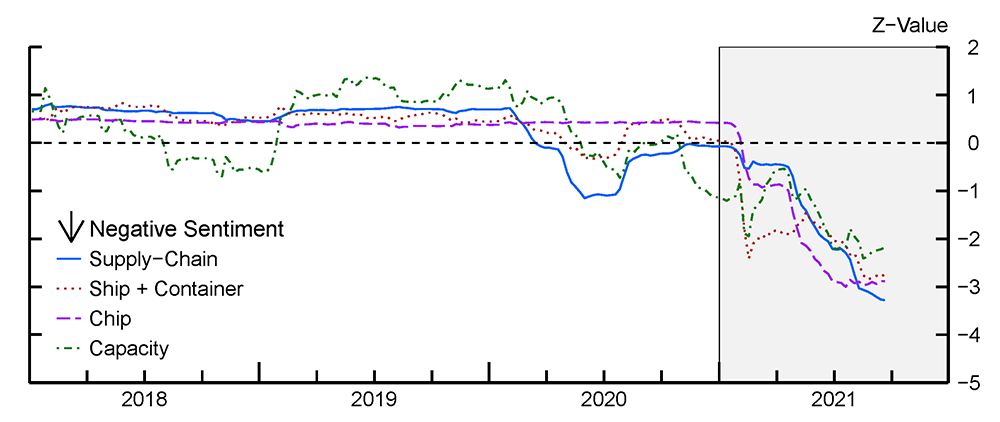
Proximity-based Sentiment
Example: find A’s within a certain distance of a Y
# within 2 → 0
X X X X Y X X X A
# within 2 → 1
X X A X Y X X X A
# within 2 → 2
X A X A Y A X X A
# within 4 → 3
A X A X Y X X X A- Count the number of
Y’s in the text that have anAnear enough to them - Aggregate at scale!
- Uses
Tokenizer()andStopWordsRemover()
JohnSnowLabs Spark NLP
Why a dedicated NLP library?
Which NLP libraries have the most features?
Comparing NLP Packages
Just because it is scalable does not mean it lacks features!
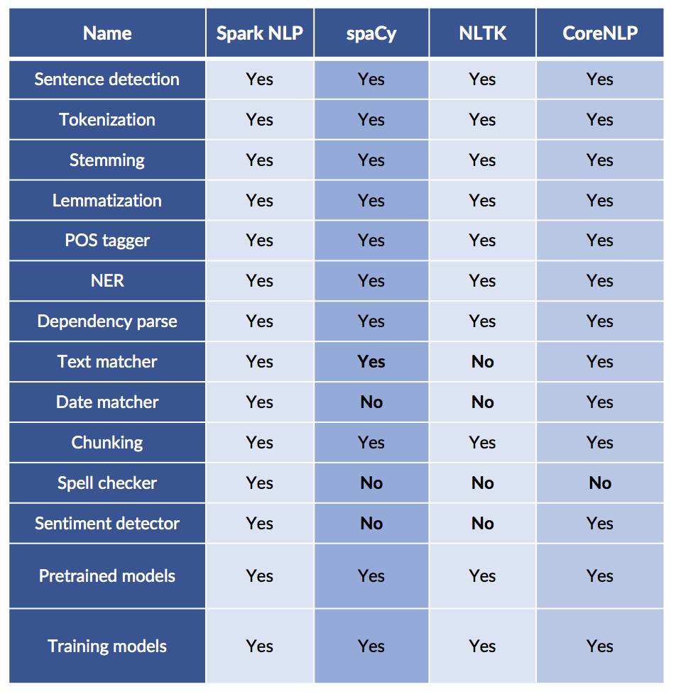
Most Popular AI/ML Packages
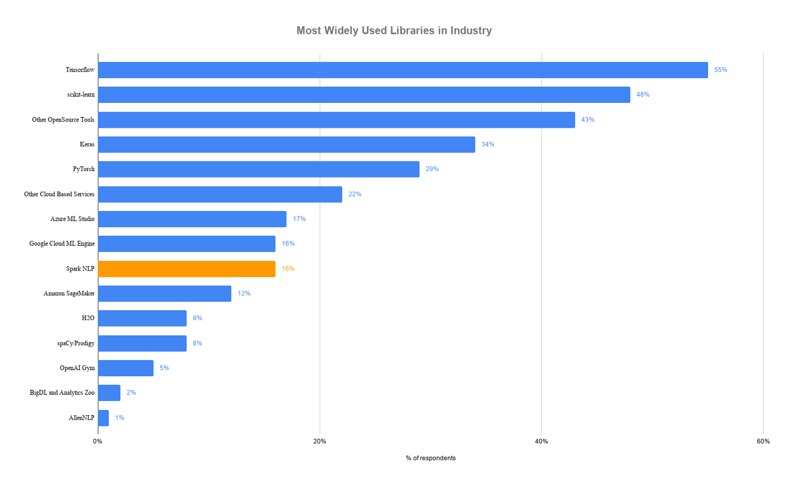
Spark NLP is faster than spaCy
Benchmark: pipeline with sentence boundary detection, tokenizer, and POS tagger on a 4-core laptop
Why is Spark NLP faster?
- Whole-stage code generation, vectorized in-memory columnar data
- No copying of text in memory
- Extensive profiling, config, and code optimization of Spark and TensorFlow
- Optimized for both training and inference
And it scales across a cluster!
Spark NLP Capabilities
Reusing the Spark ML Pipeline
- Unified NLP & ML pipelines
- End-to-end execution planning
- Serializable
- Distributable
Reusing NLP Functionality
- TF-IDF calculation
- String distance calculation
- Stop word removal
- Topic modeling
- Distributed ML algorithms
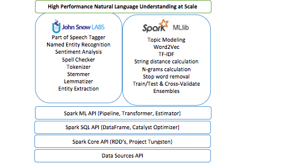
Spark NLP Terminology
Annotators
- Like the ML tools we used in Spark
- Always need input and output columns
- Two flavors:
- Approach — like ML Estimators that need a
fit()method to make an Annotator Model/Transformer - Model — like ML Transformers; uses
transform()method only
- Approach — like ML Estimators that need a
Annotator Models
- Pretrained public versions available through
.pretrained()method
Q: Do transformer ML methods ever remove columns in a Spark DataFrame?
No!! They only add columns.
Spark NLP Sentiment Example
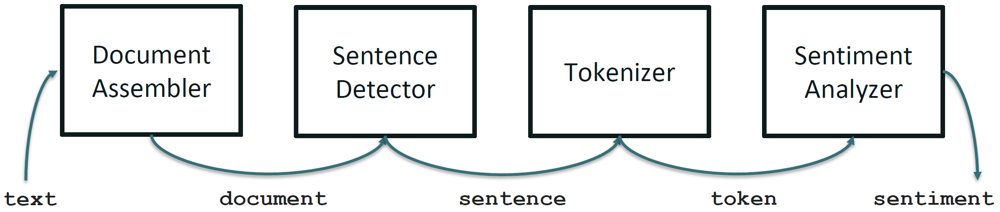
Spark NLP Pipeline Example
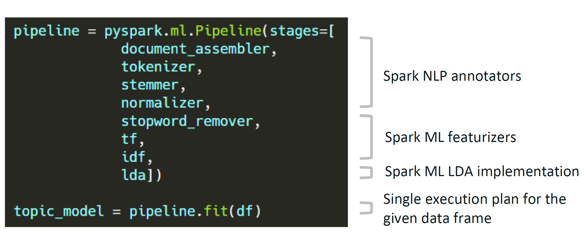
Spark NLP Pipeline Types
Spark Pipeline
- Efficiently run on a whole Spark DataFrame
- Distributable on a cluster
- Uses Spark tasks, optimizations, and execution planning
- Used by
PretrainedPipeline.transform()
Light Pipeline
- Efficiently run on a single sentence
- Faster than a Spark pipeline for up to 50,000 local documents
- Easiest way to publish a pipeline as an API
- Used by
PretrainedPipeline.annotate()
Recursive Pipeline
- Gives annotators access to other annotators in the same pipeline
- Required when training your own models
Spark NLP Pipeline Code Example
from pyspark.ml import Pipeline
from sparknlp.base import *
from sparknlp.annotator import *
document_assembler = DocumentAssembler() \
.setInputCol("text") \
.setOutputCol("document")
sentenceDetector = SentenceDetector() \
.setInputCols(["document"]) \
.setOutputCol("sentences")
tokenizer = Tokenizer() \
.setInputCols(["sentences"]) \
.setOutputCol("token")
normalizer = Normalizer() \
.setInputCols(["token"]) \
.setOutputCol("normal")
word_embeddings = WordEmbeddingsModel.pretrained() \
.setInputCols(["document", "normal"]) \
.setOutputCol("embeddings")DocumentAssembler — entry point for Spark NLP
import sparknlp
from sparknlp.base import DocumentAssembler
data = spark.createDataFrame([
["Spark NLP is an open-source text processing library."]
]).toDF("text")
documentAssembler = DocumentAssembler() \
.setInputCol("text") \
.setOutputCol("document")
result = documentAssembler.transform(data)
result.select("document").show(truncate=False)
# +----------------------------------------------------------------------------------------------+
# |document |
# +----------------------------------------------------------------------------------------------+
# |[[document, 0, 51, Spark NLP is an open-source text processing library., [sentence -> 0], []]]|
# +----------------------------------------------------------------------------------------------+Using HuggingFace Models with Spark NLP
Spark NLP integrates with HuggingFace Transformers models:
from transformers import TFDistilBertForSequenceClassification, DistilBertTokenizer
from sparknlp.annotator import DistilBertForSequenceClassification
MODEL_NAME = 'distilbert-base-uncased-finetuned-sst-2-english'
# Save tokenizer and model locally
tokenizer = DistilBertTokenizer.from_pretrained(MODEL_NAME)
tokenizer.save_pretrained(f'./{MODEL_NAME}_tokenizer/')
model = TFDistilBertForSequenceClassification.from_pretrained(MODEL_NAME)
model.save_pretrained(f'./{MODEL_NAME}', saved_model=True)
# Load into Spark NLP
sequenceClassifier = DistilBertForSequenceClassification \
.loadSavedModel(f'{MODEL_NAME}/saved_model/1', spark) \
.setInputCols(["document", "token"]) \
.setOutputCol("class") \
.setCaseSensitive(True)Readings
Required:
Encouraged: